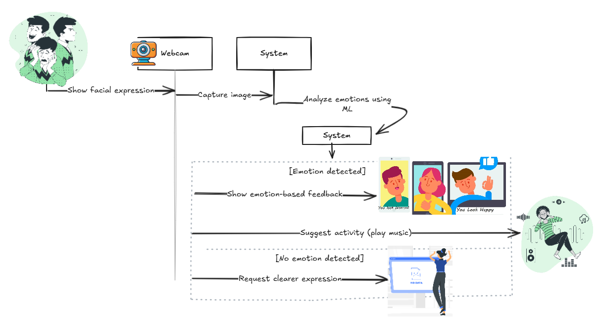

Emotion Awareness
Its a system that uses a webcam to capture a person's facial expression, analyze their emotions, and
respond with appropriate visual or textual feedback : a smart mirror that can "perceive" how you're feeling.
This project simulates the human perceptual process:
- Visual sensing (camera as the eye)
- Interpretation (emotion recognition via machine learning)
- Emotional response (feedback on screen)
- Suggest activities (play music)
How it can help:
- Can be used in educational robots, or autistic care assistants
- Encourages self-awareness in users by reflecting emotional state
- Useful for health, education, caregiving, and wellness tech
- It can provide emotional support

🔧 Under Construction; more features will be added.
View Code